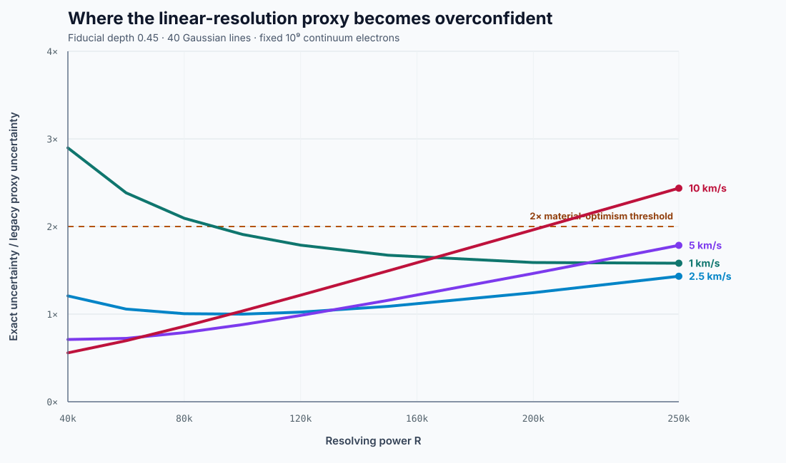

Exact uncertainty divided by proxy uncertainty at R=40,000, 1 km/s intrinsic FWHM, depth 0.2, and 80 lines.
Version 2 · reproducible methods note
Resolution helps.
Not linearly forever.
A controlled, 288-scenario test of the shortcut that Doppler information always scales linearly with spectrograph resolving power.
Grid8 × 4 × 3 × 3R · width · depth · line count
Photon budget10⁹ e⁻fixed continuum electrons
Sampling check0 flips4 versus 8 pixels / resolution element
EvidenceSHA-256protocol and model bound to results
Finding 01
The same proxy fails at both ends for different reasons.
Narrow unresolved lines lose more information than the shortcut admits at low R. Broad resolved lines saturate while the shortcut keeps promising a 1/R improvement.
Median exact improvement from R=100k to 250k for 10 km/s lines. The proxy claims 60% in every width regime.
Median exact improvement over the same resolving-power interval for 1 km/s lines.

Interactive sensitivity explorer
Change one assumption. See where the shortcut breaks.
The browser and offline study call the same scientific implementation. Values are synthetic photon-noise lower bounds.
Uncertainty curve
Exact bound versus calibrated proxy
Computing…
Generalization map
Exact uncertainty ÷ proxy uncertainty
Current depth, count, and electron budget
proxy conservative near calibration ≥2× optimistic
Construct
Place deterministic Gaussian absorption lines across a fixed 3,000 km/s interval.
Broaden
Convolve intrinsic and instrumental Gaussian widths while conserving equivalent width.
Count
Distribute a fixed continuum-electron budget over four pixels per resolution element.
Differentiate
Evaluate the analytical spectrum derivative and independent-Poisson Fisher information.
Challenge
Calibrate the old proxy once, then test every cell without retuning it.
Boundary of inference
This is not a spectrograph forecast.
It excludes detector noise, throughput, wavelength calibration, template mismatch, tellurics, photospheric velocities, cadence, orbital search, and correlated noise. No named instrument is predicted or ranked. No planet-detection limit is estimated.
Primary-source context
Reported values stay in their own estimands.
Design goals, formal errors, short-term precision, and long-baseline residuals are not treated as interchangeable validation points.